Ảnh chụp & tài nguyên
Bảng merge là màn chơi chính của Gossip Harbor: người chơi chạm vào máy tạo (generator) để sinh vật phẩm cấp 1, kéo hai vật phẩm cùng loại cùng cấp chồng lên…
Mô tả
- Bảng merge là màn chơi chính của Gossip Harbor: người chơi chạm vào máy tạo (generator) để sinh vật phẩm cấp 1, kéo hai vật phẩm cùng loại cùng cấp chồng lên nhau để tạo vật phẩm cấp cao hơn, rồi dùng vật phẩm đạt yêu cầu để giao đơn hàng cho khách.
- Mỗi lần chạm máy tạo tốn năng lượng; máy có thời gian hồi (recharging) và một số máy tự sinh vật phẩm.
- Bảng có giới hạn ô, nên người chơi phải quản lý chỗ trống bằng kho đồ (inventory), bán hoặc xóa vật phẩm.
- Ngoài vật phẩm thường còn có rương, bong bóng, vật phẩm đóng băng tạm thời, vật phẩm tài nguyên (coin/gem/năng lượng) và hộp chọn máy tạo.
Còn thiếu / chưa xác minh
Mở khóa & điểm vào
Có ngay từ đầu (màn chính sau CG mở đầu và tutorial). Bằng chứng: tutorial_* (TutorialBoardWindow), inventory_guide_* khi bảng đầy lần đầu.
Điểm vào:
- Màn chính (BaseSceneView) — vùng bảng
- Nút kho đồ trên HUD (InventoryWindow)
- Chạm vật phẩm → bảng thông tin dưới bảng (ItemDetailWindow)
Cách hoạt động
- Người chơi chạm máy tạo (hint_desc_tap_spawn) để sinh vật phẩm cấp thấp nhất của chuỗi, trừ năng lượng.
- Kéo vật phẩm cùng loại cùng cấp lên nhau để lên cấp (hint_desc_merge) cho tới cấp tối đa (hint_desc_max_level).
- Máy tạo có trạng thái đang hồi (hint_item_recharging) và có thể tăng tốc bằng gem (hint_speedup_btn); máy tự sinh (hint_desc_auto_spawn) thả vật phẩm theo thời gian.
- Khi máy tạo ra vật phẩm 'Lucky' (lucky_produce_normal/super/double/triple) người chơi nhận vật phẩm cấp cao hơn hoặc nhiều hơn bình thường.
- Rương phải nhấn đúp để mở, chỉ mở được một rương tại một thời điểm (hint_desc_cannot_open, hint_desc_opening).
- Vật phẩm trong bong bóng có thể mua bằng gem hoặc chờ bong bóng tự vỡ để nhận coin (hint_desc_in_bubble).
- Vật phẩm đóng băng (temp item) phải được merge với vật phẩm thường trước khi hết giờ, nếu không sẽ biến mất (temp_item_desc).
- Khi bảng đầy (hint_board_full), người chơi kéo vật phẩm vào kho đồ; kho đồ có số ô giới hạn và mở thêm ô bằng gem (inventory_confirm_desc).
- Vật phẩm không cần có thể bán lấy coin hoặc xóa, kèm hộp thoại xác nhận cho vật phẩm hiếm (sell_confirm_*).
- Vật phẩm tài nguyên (coin 24xx, gem 25xx, năng lượng 26xx) được chạm để thu vào ví. Ở giai đoạn sau mở Xưởng nâng cấp máy tạo (Generator Workshop) trong kho đồ để gộp các máy cấp thấp thành máy cấp cao.
Luồng chi tiết theo code
Người chơi chạm máy tạo (hint_desc_tap_spawn) để sinh vật phẩm cấp thấp nhất của chuỗi, trừ năng lượng. Kéo vật phẩm cùng loại cùng cấp lên nhau để lên cấp (hint_desc_merge) cho tới cấp tối đa (hint_desc_max_level). Máy tạo có trạng thái đang hồi (hint_item_recharging) và có thể tăng tốc bằng gem (hint_speedup_btn); máy tự sinh (hint_desc_auto_spawn) thả vật phẩm theo thời gian. Khi máy tạo ra vật phẩm 'Lucky' (lucky_produce_normal/super/double/triple) người chơi nhận vật phẩm cấp cao hơn hoặc nhiều hơn bình thường. Rương phải nhấn đúp để mở, chỉ mở được một rương tại một thời điểm (hint_desc_cannot_open, hint_desc_opening). Vật phẩm trong bong bóng có thể mua bằng gem hoặc chờ bong bóng tự vỡ để nhận coin (hint_desc_in_bubble). Vật phẩm đóng băng (temp item) phải được merge với vật phẩm thường trước khi hết giờ, nếu không sẽ biến mất (temp_item_desc). Khi bảng đầy (hint_board_full), người chơi kéo vật phẩm vào kho đồ; kho đồ có số ô giới hạn và mở thêm ô bằng gem (inventory_confirm_desc). Vật phẩm không cần có thể bán lấy coin hoặc xóa, kèm hộp thoại xác nhận cho vật phẩm hiếm (sell_confirm_*). Vật phẩm tài nguyên (coin 24xx, gem 25xx, năng lượng 26xx) được chạm để thu vào ví. Ở giai đoạn sau mở Xưởng nâng cấp máy tạo (Generator Workshop) trong kho đồ để gộp các máy cấp thấp thành máy cấp cao.
Ảnh chụp & tài nguyên (15)
12 ảnh chụp trong game (BlueStacks/LDPlayer, tài khoản cấp 4); 3 bảng sprite trích từ bundle sự kiện trên CDN hotfix 3.99.0 (mỗi bảng là một chủ đề/biến thể; sprite rời, không phải màn hình đã dựng). Bấm ảnh để phóng to; nhãn UC dẫn tới use case tương ứng.

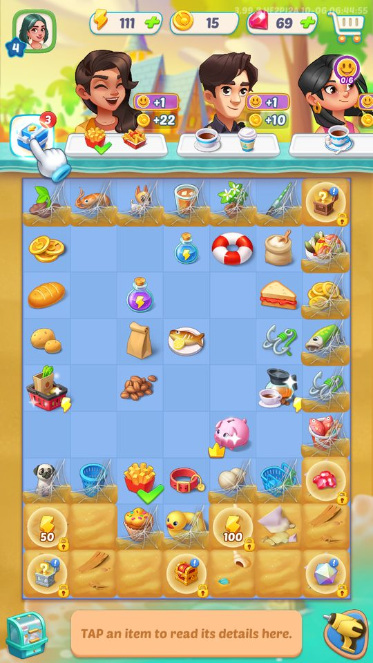

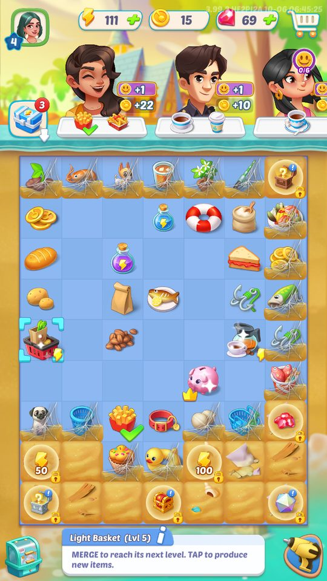


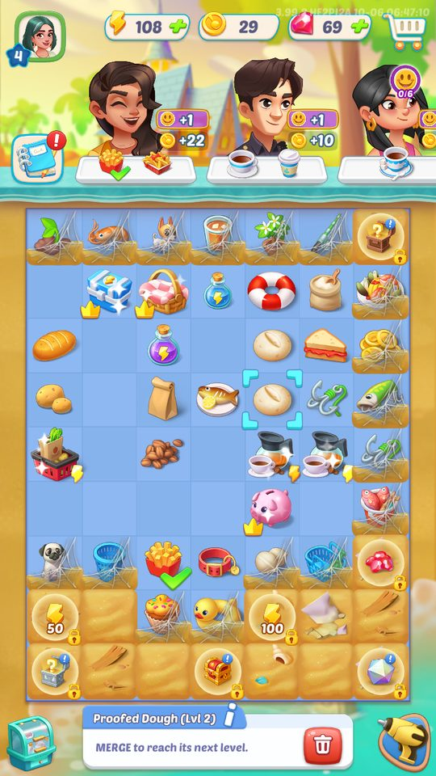

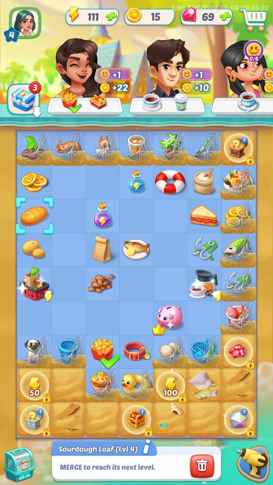

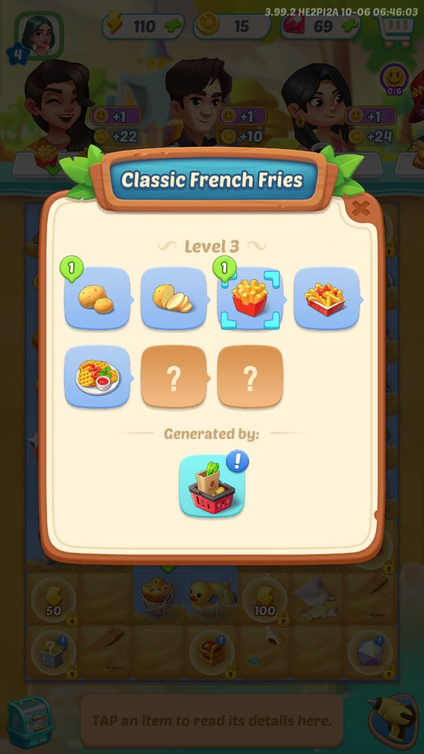

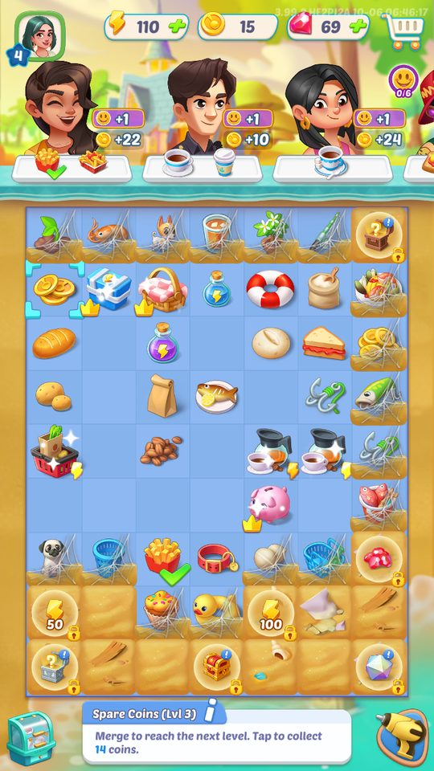

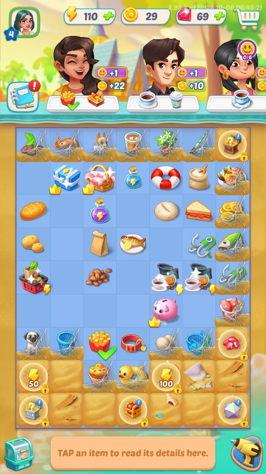

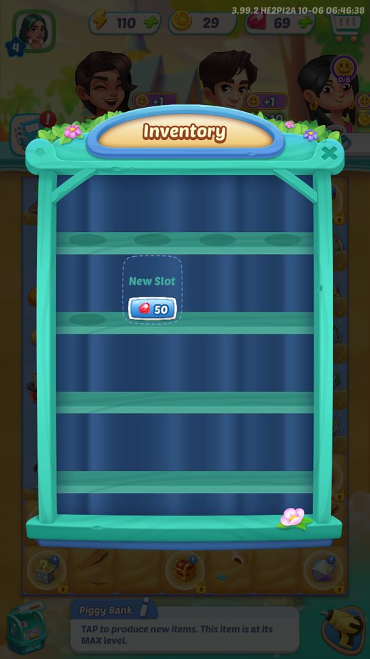

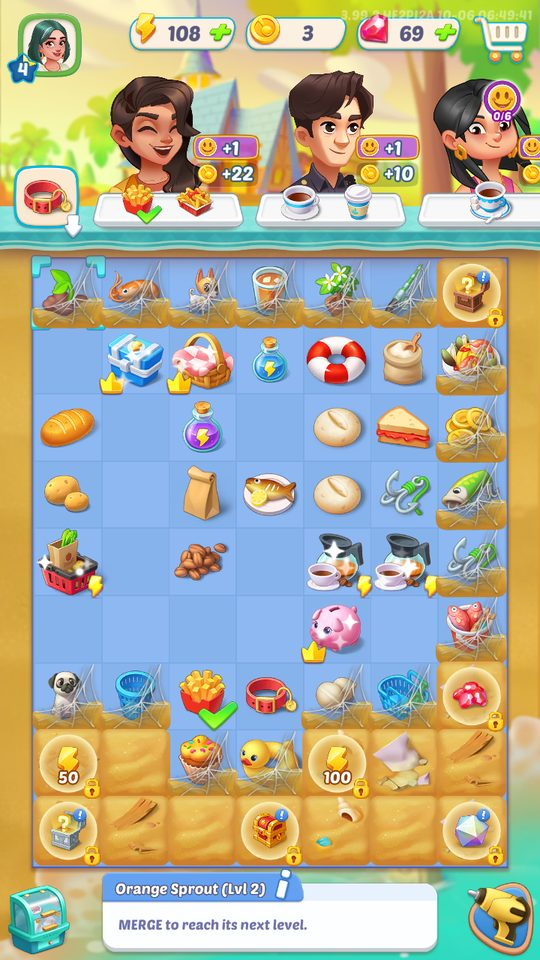

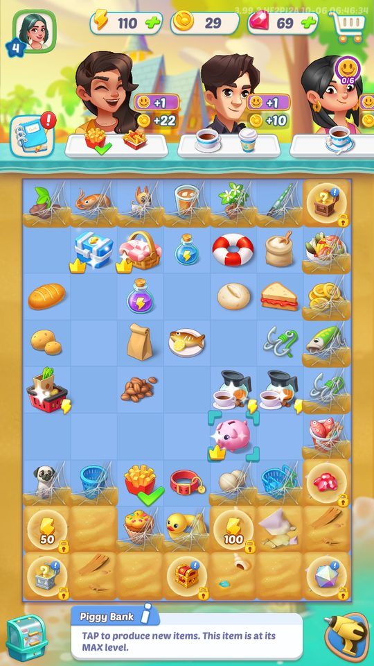

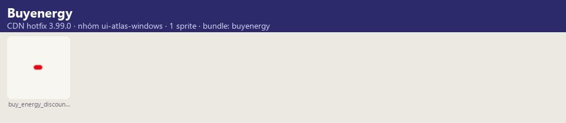

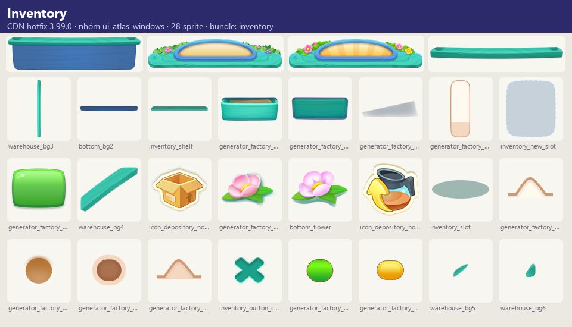

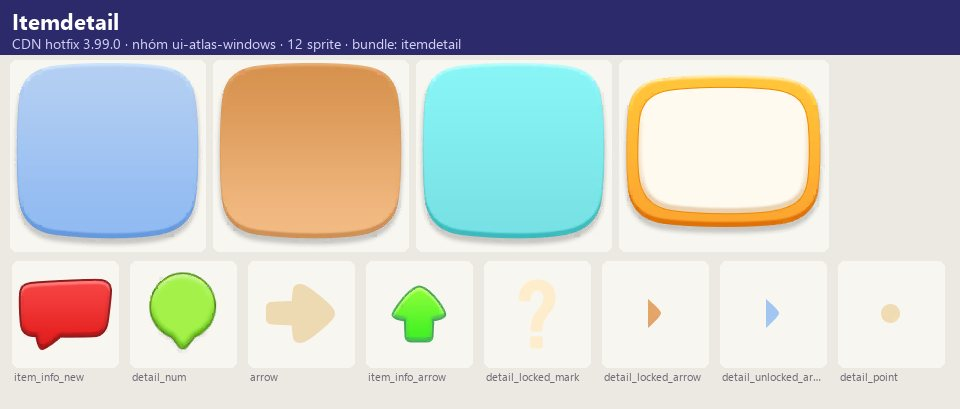
Phần thưởng
Phần thưởng theo code
| Ngữ cảnh | Phần thưởng | Evidence |
|---|---|---|
| Chạm vật phẩm tài nguyên | Coin 2–62 Gem 1–15 Năng lượng 2–100 theo cấp | item_24xx/25xx/26xx_desc |
| Phá bong bóng / xóa vật phẩm đóng băng | 1Coin | remove_bubble_confirm_desc, temp_item_remove_desc |
Số liệu chính
| Chỉ số | Giá trị | Nguồn |
|---|---|---|
| Mã vật phẩm = chuỗi×100 + cấp; ví dụ 101..111 túi tạp hóa (11 cấp), 201..215 bánh mì→burger (15 cấp), 401..411 cà phê (11 cấp), 701..711 câu cá (11 cấp) | 67 dải ID (xem rules/notes) | Chuỗi vật phẩm (item_<id>_name) — Text/GameText/game_text_en.json |
| Coin nhận khi chạm vật phẩm coin cấp 1..5 | 2 / 6 / 14 / 30 / 62 | item_24xx (coin) — game_text item_2401_desc..item_2405_desc |
| Gem nhận khi chạm vật phẩm gem cấp 1..4 | 1 / 3 / 7 / 15 | item_25xx (gem) — game_text item_2501_desc..item_2504_desc |
| Năng lượng nhận khi chạm vật phẩm năng lượng cấp 1..5 | 2 / 6 / 15 / 40 / 100 | item_26xx (năng lượng) — game_text item_2601_desc..item_2605_desc |
| Vật phẩm mở ra phần thưởng | 2701/2702 Red Chest, 2801/2802 Green Chest, 2901 Energy Chest, 3001 Picnic Basket, 3101 Piggy Bank, 3501..3901 các Gift | Rương — game_text item_27xx..39xx_name |
| Giá mở thêm ô kho | New Slot = 50 gem (kho trống ở cấp 4) | Ô kho đồ — screens/manifest.json |
| Quan sát ảnh chụp | 7 cột × 9 hàng (bảng chính, cấp 4) | Kích thước bảng — screens/manifest.json |
Use case (14)
Bấm vào từng use case để mở. Mở/đóng tất cả
UC-01 Chạm máy tạo sinh vật phẩm
Các bước- Chạm máy tạo
- Trừ năng lượng
- Vật phẩm cấp 1 của chuỗi bay ra ô trống gần nhất
| Actor | Player |
|---|---|
| Trigger | Chạm vào máy tạo trên bảng |
| Điều kiện | Đủ năng lượng; máy không trong thời gian hồi; bảng còn ô trống |
| Kết quả | Vật phẩm mới trên bảng; máy có thể chuyển sang trạng thái hồi |
| Quy tắc / số liệu | Thiếu ô → báo hint_board_is_full; máy hồi → hint_item_recharging, có nút Speed Up (gem) |
| Evidence | text hint_desc_tap_spawn, hint_item_recharging, hint_speedup_btn, hint_board_is_full |
UC-02 Merge hai vật phẩm
Các bước- Kéo vật phẩm A thả lên B
- Hai vật phẩm biến mất, sinh vật phẩm cấp +1 tại vị trí B
| Actor | Player |
|---|---|
| Trigger | Kéo vật phẩm lên vật phẩm cùng loại cùng cấp |
| Điều kiện | Hai vật phẩm cùng chuỗi, cùng cấp, chưa đạt cấp tối đa |
| Kết quả | Lên cấp vật phẩm; có thể kích hoạt gợi ý merge tiếp theo |
| Quy tắc / số liệu | Cấp tối đa không merge được (hint_desc_max_level). Có thể bật/tắt gợi ý merge trong cài đặt (merge_hint_on_hint/off_hint) |
| Evidence | text hint_desc_merge, hint_desc_max_level, merge_hint_*; prefab ItemGeneratorMergeTip, ItemHighLightView |
UC-03 Sản phẩm Lucky
Các bước- Máy sinh vật phẩm cấp cao hơn hoặc nhiều vật phẩm
- Hiển thị nhãn Lucky / Lucky X2 / Lucky X3
| Actor | System |
|---|---|
| Trigger | Máy tạo sinh vật phẩm |
| Điều kiện | Trúng xác suất Lucky (có thể tăng bởi buff Generator Enhancer) |
| Kết quả | Người chơi nhận thêm giá trị không tốn năng lượng |
| Quy tắc / số liệu | Tỉ lệ Lucky do server/Lua cấu hình (không đọc được) |
| Evidence | text lucky_produce_normal/super/double/triple; prefab ItemSpreadPromptLuckyNormal/Super/Conti1/Conti2 |
UC-04 Mở rương trên bảng
Các bước- Nhấn đúp rương
- Rương chuyển trạng thái Opening theo thời gian
- Hết giờ: chạm để nhận vật phẩm
| Actor | Player |
|---|---|
| Trigger | Nhấn đúp vào rương |
| Điều kiện | Không có rương khác đang mở |
| Kết quả | Vật phẩm từ bảng 'May contain these items' xuất hiện trên bảng |
| Quy tắc / số liệu | Chỉ một rương mở cùng lúc; có thể tăng tốc |
| Evidence | text hint_desc_open, hint_desc_cannot_open, hint_desc_opening, item_info_chest_desc; chuỗi 27xx Red Chest, 28xx Green Chest, 29xx Energy Chest |
UC-05 Bong bóng vật phẩm
Các bước- Chạm bong bóng xem giá
- Mua bằng gem (bubble_confirm_desc) hoặc chờ bong bóng tự vỡ
- Hoặc phá bong bóng (Break) để lấy 1 coin
| Actor | Player |
|---|---|
| Trigger | Bong bóng xuất hiện khi merge (vật phẩm thưởng) |
| Điều kiện | — |
| Kết quả | Mua: nhận vật phẩm; vỡ/phá: nhận coin |
| Quy tắc / số liệu | Có khuyến mãi giảm giá bong bóng (Big Bubble Bargains) |
| Evidence | text hint_desc_in_bubble, hint_desc_in_bubble_delete, bubble_confirm_*, remove_bubble_confirm_*, bubble_sale_*; prefab RemoveBubbleConfirmWindow, BubbleSale/* |
UC-06 Vật phẩm đóng băng (tạm thời)
Các bước- Vật phẩm đóng băng xuất hiện kèm đồng hồ
- Merge với vật phẩm thường cùng loại trước khi hết giờ
- Hết giờ: vật phẩm tan biến
| Actor | Player |
|---|---|
| Trigger | Nhận vật phẩm đóng băng (sự kiện/thưởng) |
| Điều kiện | — |
| Kết quả | Merge kịp: được dùng miễn phí |
| Quy tắc / số liệu | Có thể xóa đổi 1 coin (temp_item_remove_desc) |
| Evidence | text temp_item_*; prefab TempItem/ItemTempView, RemoveTempConfirmWindow; audio sfxTempItemAppear, SfxIceBreak |
UC-07 Cất vào kho đồ
Các bước- Nhấn giữ và kéo vật phẩm vào biểu tượng kho
- Mở kho để xem
- Chạm vật phẩm để đưa lại lên bảng
| Actor | Player |
|---|---|
| Trigger | Bảng đầy hoặc muốn giữ vật phẩm |
| Điều kiện | Kho còn ô trống |
| Kết quả | Giải phóng ô trên bảng |
| Quy tắc / số liệu | Kho đầy → hint_inventory_full; một số vật phẩm không cất được (hint_cannot_store); mở thêm ô bằng gem |
| Evidence | text inventory_guide_1..4, inventory_confirm_desc, hint_inventory_full, hint_cannot_store; prefab InventoryWindow |
UC-08 Dùng vật phẩm trong kho để giao đơn
Các bước- Bấm giao đơn
- Hộp thoại 'Complete Order?' liệt kê vật phẩm sẽ lấy từ kho
- Continue / Rethink
| Actor | Player |
|---|---|
| Trigger | Giao đơn khi vật phẩm yêu cầu đang nằm trong kho |
| Điều kiện | Kho có vật phẩm đúng yêu cầu |
| Kết quả | Đơn hoàn thành bằng vật phẩm trong kho |
| Quy tắc / số liệu | — |
| Evidence | text inventory_item_use_*; prefab UseInventoryItemConfirmWindow |
UC-09 Bán / xóa vật phẩm
Các bước- Chọn vật phẩm
- Bấm Sell (hoặc xóa)
- Nếu vật phẩm khó kiếm → hộp thoại xác nhận
| Actor | Player |
|---|---|
| Trigger | Chọn vật phẩm → Sell |
| Điều kiện | Vật phẩm cho phép bán/xóa |
| Kết quả | Nhận coin (bán) hoặc vật phẩm biến mất (xóa) |
| Quy tắc / số liệu | Một số vật phẩm không xóa được (hint_cannot_delete) |
| Evidence | text hint_sell_btn, hint_sold, hint_removed, sell_confirm_*, hint_cannot_delete; prefab DeleteItemConfirmWindow, UIBoardDeleteItemConfirmWindow |
UC-10 Thu vật phẩm tài nguyên
Các bước- Chạm vật phẩm
- Giá trị bay vào ví
| Actor | Player |
|---|---|
| Trigger | Chạm vật phẩm coin/gem/năng lượng |
| Điều kiện | — |
| Kết quả | Tăng coin/gem/năng lượng |
| Quy tắc / số liệu | Coin 24xx: 2/6/14/30/62; Gem 25xx: 1/3/7/15; Năng lượng 26xx: 2/6/15/40/100 (theo cấp) |
| Evidence | text item_2401..2405_desc, item_2501..2504_desc, item_2601..2605_desc; prefab ItemCollectablePrompt/Tip, CollectItemConfirmWindow |
UC-11 Xưởng nâng cấp máy tạo
Các bước- Chạm máy tạo cấp thấp trên bảng để thu vào xưởng
- Đủ số lượng → Craft
- Nhận máy tạo cấp cao hơn
| Actor | Player |
|---|---|
| Trigger | Mở khóa Generator Workshop (trong kho đồ) |
| Điều kiện | Đạt mốc mở khóa (server/Lua) |
| Kết quả | Máy tạo mạnh hơn (tạo vật phẩm cấp cao hơn / tỉ lệ cao hơn) |
| Quy tắc / số liệu | Không đủ → generator_factory_notenough |
| Evidence | text generator_factory_*; generator_info_higher_hint, generator_info_new_hint |
UC-12 Hộp chọn máy tạo
Các bước- Mở hộp
- Chọn một máy tạo trong danh sách (ItemChooseWindow)
| Actor | Player |
|---|---|
| Trigger | Nhận Generator Choice Box (thưởng/gói) |
| Điều kiện | — |
| Kết quả | Máy tạo được đặt lên bảng |
| Quy tắc / số liệu | — |
| Evidence | item_4001/4201 Generator Choice Box, item_4101 Red Choice Box, item_ns_*; prefab ItemChooseWindow, NewGeneratorTipWindow |
UC-13 Chướng ngại & sương mù trên bảng
Các bước- Merge vật phẩm cạnh ô thưởng/chướng ngại
- Ô được mở khóa, nhận thưởng
| Actor | Player |
|---|---|
| Trigger | Bảng có ô bị khóa/chướng ngại (đặc biệt ở sự kiện) |
| Điều kiện | — |
| Kết quả | Mở rộng bảng / nhận phần thưởng |
| Quy tắc / số liệu | board_reward_locked_hint: 'Merge items near the reward to unlock!' |
| Evidence | prefab FogLock, BaseUIBoardObstacleView, FlyObstacleClearTool, FlyObstacleRewardItem; text board_reward_locked_hint |
UC-14 Heo đất (máy tạo & phần thưởng)
Các bước- Thu coin để nâng cấp heo đất
- Hết đếm ngược: nhận thưởng theo cấp đạt được
| Actor | Player |
|---|---|
| Trigger | Có vật phẩm Piggy Bank (31xx) |
| Điều kiện | Trong thời gian heo đất hoạt động |
| Kết quả | Nhận gói thưởng (Empty / Handful / Bunch / Stuffed) |
| Quy tắc / số liệu | 4 mức thưởng piggy_bank_rwd_num_0..3; trên bảng heo đất là máy tạo ở cấp tối đa: 'TAP to produce new items. This item is at its MAX level.' (ảnh chụp) |
| Evidence | text piggy_bank_rwd_*; item_3101_name Piggy Bank |
Cấu hình (10)
Gộp mọi nguồn: const trong code, JSON mặc định trong Resources, bảng static, storage key, AB test, cờ server.
| Nguồn | Key | Kiểu | Giá trị | Ý nghĩa | Nơi định nghĩa |
|---|---|---|---|---|---|
| asset | Chuỗi vật phẩm (item_<id>_name) | id | 67 dải ID (xem rules/notes) | Mã vật phẩm = chuỗi×100 + cấp; ví dụ 101..111 túi tạp hóa (11 cấp), 201..215 bánh mì→burger (15 cấp), 401..411 cà phê (11 cấp), 701..711 câu cá (11 cấp) | Text/GameText/game_text_en.json |
| asset | item_24xx (coin) | int | 2 / 6 / 14 / 30 / 62 | Coin nhận khi chạm vật phẩm coin cấp 1..5 | game_text item_2401_desc..item_2405_desc |
| asset | item_25xx (gem) | int | 1 / 3 / 7 / 15 | Gem nhận khi chạm vật phẩm gem cấp 1..4 | game_text item_2501_desc..item_2504_desc |
| asset | item_26xx (năng lượng) | int | 2 / 6 / 15 / 40 / 100 | Năng lượng nhận khi chạm vật phẩm năng lượng cấp 1..5 | game_text item_2601_desc..item_2605_desc |
| asset | Rương | id | 2701/2702 Red Chest, 2801/2802 Green Chest, 2901 Energy Chest, 3001 Picnic Basket, 3101 Piggy Bank, 3501..3901 các Gift | Vật phẩm mở ra phần thưởng | game_text item_27xx..39xx_name |
| asset | Họ vật phẩm đặc biệt | prefix | item_main_card (156), item_w_task (84), item_main_super (49), item_main_gem (17), item_adv_energy/gold/gem, item_infi_ene (15), item_time_skip (10), item_s_exp (10), item_main_smart (10), item_bp_chest (9) | Thẻ album, vật phẩm nhiệm vụ, máy tạo super, gói năng lượng/coin/gem, năng lượng vô hạn, tua thời gian, EXP, máy tạo 'smart', rương Battle Pass | game_text item_* |
| storage key | board, slot, item, ItemUnlockStr, cacheItem, inventory | table | — | Bảng CSDL lưu trạng thái bảng/ô/vật phẩm/vật phẩm đã mở khóa/kho đồ | PlayerPrefs TableModified_* (CSDL SQLCipher) |
| runtime (ảnh chụp BlueStacks 06/10/2026) | Ô kho đồ | New Slot = 50 gem (kho trống ở cấp 4) | Giá mở thêm ô kho | screens/manifest.json | |
| runtime (ảnh chụp BlueStacks 06/10/2026) | Kích thước bảng | 7 cột × 9 hàng (bảng chính, cấp 4) | Quan sát ảnh chụp | screens/manifest.json | |
| runtime (ảnh chụp BlueStacks 06/10/2026) | Spare Coins (Lvl 3) | Tap to collect 14 coins (khớp item_2403_desc) | Xác nhận runtime | screens/manifest.json |
Backend / server
| Command | Chiều | Mục đích |
|---|---|---|
SyncModel upload/checkUpload | client→server | Đồng bộ trạng thái bảng/kho theo chu kỳ (log 'SyncModel checkUpload') |
Giao diện (UI)
| Element | Class | Mục đích |
|---|---|---|
| Gợi ý thu vật phẩm | Board/Prefab/ItemCollectablePrompt, ItemCollectableTip | Hướng dẫn chạm thu tài nguyên |
| Gợi ý merge máy tạo | Board/Prefab/ItemGeneratorMergeTip | Gợi ý gộp máy tạo |
| Nhãn Lucky | Board/Prefab/ItemSpreadPromptLucky* | Báo sản phẩm Lucky |
| Sương mù/khóa | Board/Prefab/Fog/FogLock | Ô chưa mở |
| Chướng ngại | Board/Prefab/Obstacle/BaseUIBoardObstacleView | Ô chướng ngại trên bảng sự kiện |
| Kho đồ | Prefabs/Window/Inventory/InventoryWindow | Cất/lấy vật phẩm, mở ô, xưởng máy tạo |
| Chi tiết vật phẩm | Prefabs/Window/ItemDetailWindow | Chuỗi merge, nguồn tạo (item_info_produced_by_desc) |
| Chọn vật phẩm | Prefabs/Window/ItemChooseWindow | Hộp chọn máy tạo |
| Xác nhận dùng kho/đặc biệt | UseInventoryItemConfirmWindow, UseSpecialItemConfirmWindow | Giao đơn bằng vật phẩm trong kho |
| Gợi ý x2/x4/x8 năng lượng | Board/BaseUIBoard/prefab/BaseUIBoardMultiBoostPrompt | Chế độ nhân năng lượng (xem Energy) |
Storage keys
board slot item ItemUnlockStr cacheItem inventory
Chưa đọc được / ghi chú
- Logic merge, bảng drop của máy tạo, thời gian hồi, tỉ lệ Lucky, kích thước bảng và giá mở ô kho nằm trong script Lua mã hóa và CSDL SQLCipher — không đọc được
- Giá trị coin khi bán từng vật phẩm không có trong văn bản
Tính năng liên quan
Đơn hàng & khách Năng lượng Cửa hàng & IAP Buff thuộc tính (Perk) Sự kiện tăng tốc đơn & máy tạo Sự kiện bảng merge phụ
Nguồn đã đọc
- notes/packs/MergeBoard.md
- appendix/localization.tsv
- appendix/res-registries.md (UIPrefabConfig)
- appendix/runtime.md
- screens/manifest.json (ảnh chụp)